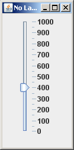

Antwort:
sliderV = new JSlider( JSlider.VERTICAL, 0, 1000, 400); sliderV.setMajorTickSpacing( 100 ); sliderV.setMinorTickSpacing( 50 ); sliderV.setPaintTicks ( true ); sliderV.setPaintLabels( true );
sliderV = new JSlider( JSlider.VERTICAL, 0, 1000, 400); sliderV.setMajorTickSpacing( 100 ); sliderV.setMinorTickSpacing( 50 ); sliderV.setPaintTicks ( true ); sliderV.setPaintLabels( true );
setPreferredSize() Layoutmanager kontrollieren die Größe der Komponenten, aber besser ist es eine bevorzugte Größe anzugeben. Wenn Sie das nicht tun, könnten die Ticks und Labels eines Sliders zu sehr aneinander gedrängt werden. Tun Sie das mit:
setPreferredSize( new Dimension( int width, int height ) )
Schlagen Sie vor, dass ein Slider eine Breite von 50 und eine Höhe von 300 hat: